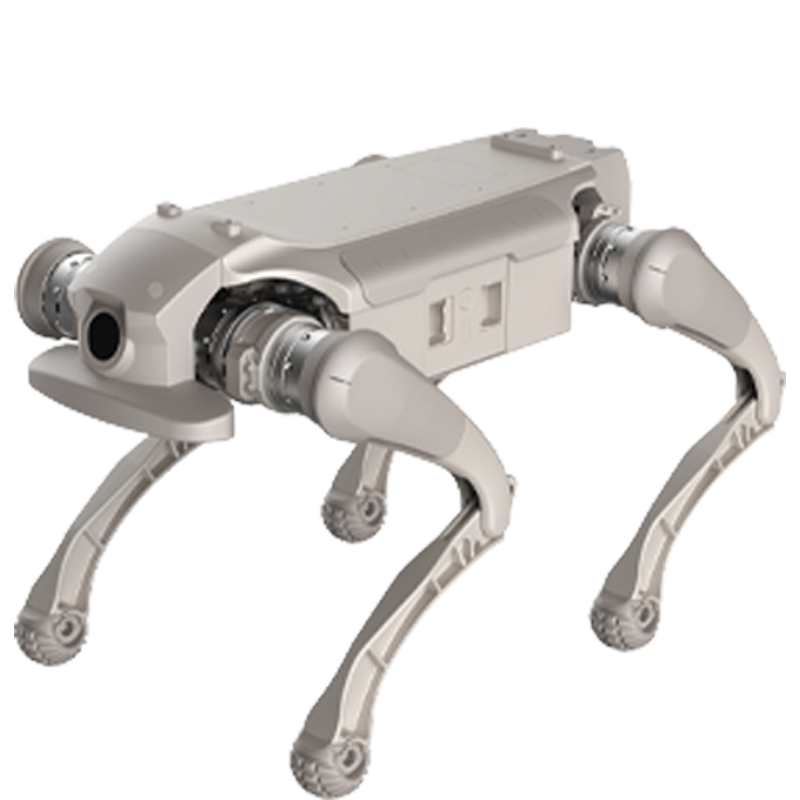

Quadruped · China · Watchlist · #50 R-Score rank
AGIBOT D1 Ultra Robot Profile
Inspection, field mobility, research, education, and quadruped autonomy development
Robot Snapshot
Core commercial and technical signals for AGIBOT D1 Ultra.
AGIBOT D1 Ultra facts
- Company
- AgiBot →
- Status
- Quadruped intelligent robot
- Use case
- Inspection, field mobility, research, education, and quadruped autonomy development
- Height
- Not disclosed
- Runtime
- Not disclosed
- Official source
- Open official source →
Robologai view
AGIBOT D1 Ultra is tracked as a Quadruped robot for Inspection, field mobility, research, education, and quadruped autonomy development. Robologai scores it by maturity, deployment signal, price clarity, media proof, and official source strength.
61/100 Watchlist
Maturity 3/5
Price clarity 1/5
Commercial 45
Mobility 86
AI signal 86
Watchlist
Readiness Breakdown
How Robologai scores AGIBOT D1 Ultra across market-readiness signals.
Data Quality
Source confidence, pricing clarity, and deployment proof.
Source Notes
AGIBOT D1 Ultra source trail.
Deployment Context
What AGIBOT D1 Ultra signals about the physical AI market.
Compare Next